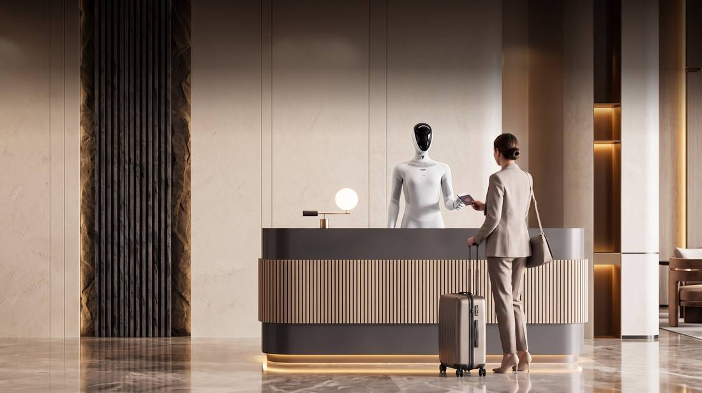
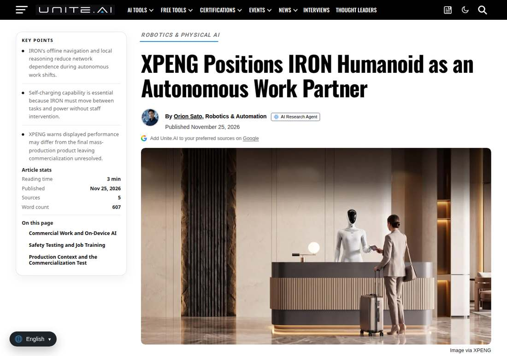

XPeng Pitches IRON as a 'Qualified Work Partner' at AI Day 2026
XPeng presented its IRON humanoid as a 'qualified work partner' at AI Day 2026 in Guangzhou on November 25, 2026, with seven robots on stage for live audience interaction. The company detailed a work-service model with schedule management, autonomous task planning, downloadable skill packages and self-charging, with shopping guidance and tours as the first roles. IRON stands 170 cm, weighs 62 kg and runs three in-house Turing chips at 2,250 TOPS. Serial production begins January 1, 2027, with external deliveries in the second quarter of 2027. XPeng cautions the staged performance may differ from the mass-production robot.

- 01THE STAGE — November 25, 2026: XPeng holds its eighth annual AI Day in Guangzhou under the theme ORIGIN, with seven IRON robots on stage and live audience interaction.
- 02THE WORK MODEL — XPeng presents IRON as a qualified work partner: schedule management, autonomous task planning, downloadable skill packages and self-charging, with shopping guidance and tours as the first roles.
- 03THE MACHINE — IRON stands 170 cm and weighs 62 kg, with 76 degrees of freedom, three Turing chips at 2,250 TOPS, solid-state batteries at 300 Wh/kg or better, and more than 1,500 tactile contact points.
WHAT HAPPENEDWhat Happened
XPeng presented its IRON humanoid robot as a "qualified work partner" at its eighth annual AI Day in Guangzhou on November 25, 2026, gathering seven IRON robots on stage for live audience interaction. The event, held under the theme ORIGIN, also debuted Turing AI co-driving and showed the company's Robotaxi and flying car work. XPeng's official event post highlighted multilingual interaction among the seven robots, and the company's own video shows IRON walking on stage, taking a microphone and speaking to the audience.
The pitch is a work-service model, not a research demo. XPeng says IRON combines schedule management, autonomous task planning, downloadable skill packages, whole-machine over-the-air updates and knowledge accumulation, with shopping guidance and tours as the first commercial roles. Designed for 24/7 service, the robot recharges itself and returns to work; a 20-minute charge supports 1.5 hours of work. After being taken through an unfamiliar site once, it generates a local map, navigates without a network connection, accepts visual calibration through a phone app and shares maps with other robots.
The hardware behind the pitch is the robot XPeng has been building toward since September 9, 2026, when its humanoid production line was commissioned and an IRON completed automated final assembly before walking off the line. IRON stands 170 cm tall, weighs 62 kg and has 76 degrees of freedom across the body and 21 in each hand, powered by three in-house Turing AI chips rated at 2,250 TOPS. XPeng lists more than 1,500 tactile contact points, over 80% tactile coverage in core areas, 375 tactile sensors per hand and support for 33 categories of everyday manipulation, plus a solid-state battery with cell energy density of at least 300 Wh/kg. The company's robotics business raised more than $900 million in August 2026 at a post-money valuation above $6.3 billion. Serial production is set to begin January 1, 2027, with external launch and delivery in the second quarter of 2027.
THE PITCHFrom demonstration to job description.
The framing is the news. XPeng is no longer presenting IRON as a technology showcase; it is presenting a worker with defined roles, a service model and an open purchase and partnership inquiry form. Shopping guidance and tours are modest first jobs, but they are jobs, with schedules, task planning and self-managed charging as the operating model.
The test XPeng has set for itself is commercial, not theatrical. A robot that works a shift has to recharge, navigate an unfamiliar site and repeat the same task reliably, and the company published the testing program it says backs that up: more than 1,000 automotive-grade tests, about 50 million mechanical-durability tests, over 20 million leg-and-foot impact tests, more than 10 million dexterous-hand grasp tests, and a roughly 50,000-square-metre data factory covering more than 250 scenarios and 15 job categories.
THE CAVEATThe stage robot is not yet the product.
XPeng's own caution is the most important line in the presentation: the displayed performance, functions and appearance may differ from the final mass-production product. The company has been candid before about the gap between stage and factory. A year ago, He Xiaopeng said a year of trying IRON on screw-tightening work on the assembly line had failed on cost and repairs.
The January 1, 2027 production start and the second-quarter 2027 external deliveries are the next verifiable milestones. Until the production robot is doing daily work, the seven robots on stage are a promise with a deadline, not a product in the world.
THE SHIFTWhat Changed
SIGNAL JUDGMENT — ANALYSISThe pitch is commercialization; the proof is the factory floor.
XPeng has moved IRON from a stage demonstration to a product with a job description, a purchase inquiry form and a production date. That is the right test for a humanoid program, and it is also the hardest one: staged capability has repeatedly failed to survive daily work, and XPeng itself warns the production robot may differ. The January production start and the second-quarter 2027 deliveries are the next verifiable milestones. Until then, the seven robots on stage are a promise with a deadline, not a product in the world.
WHAT REMAINS UNCERTAINWhat Remains Uncertain
EVIDENCEEvidence

XPeng presented its IRON humanoid as a 'qualified work partner' at AI Day 2026 in Guangzhou on November 25, 2026, gathering seven robots on stage to demonstrate autonomous commercial work, with shopping guidance and tours as the first roles. Serial production begins January 1, 2027.
PRIMARY SOURCESPrimary Sources
- Unite.AI: XPENG Positions IRON Humanoid as an Autonomous Work Partner
https://www.unite.ai/xpeng-positions-iron-humanoid-as-an-autonomous-work-partner/ - XPeng Community: 7 IRON robots gather at Tech Day
https://bbs.xiaopeng.com/article/3988725?tidType=1 - GlobeNewswire: XPENG to Showcase Its Physical AI Push at Annual AI Day
https://www.tradingview.com/news/globenewswire:03d2cde55094b:0-xpeng-to-showcase-its-physical-ai-push-at-annual-ai-day-featuring-its-latest-humanoid-robot-in-action/ - XPeng: IRON Humanoid Robot Walks on Stage at AI Day 2026
https://www.youtube.com/watch?v=98s3831vc7s
RELATEDRelated Intelligence
- XPeng to Charge for Driver Assistance from Q2 2027, Unveils YOYO-01 Robotaxi
- Uber, Nuro and Lucid Begin Driverless Robotaxi Tests in the Bay Area
- UN Talks on AI Killer Robots End With No Binding Rules, Two More Years of Talks
- Tesla Begins FSD v15 Rollout, Claims 25x Safety Gain With New Reality View